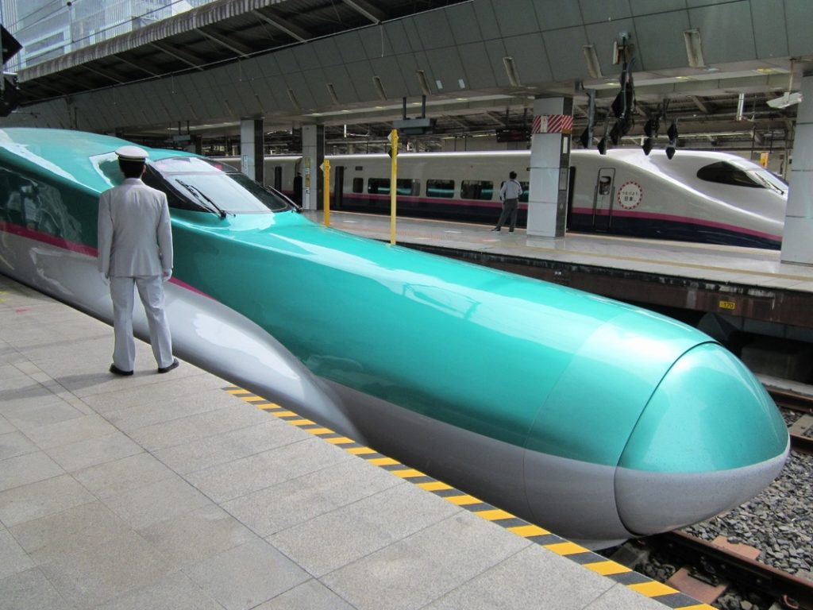
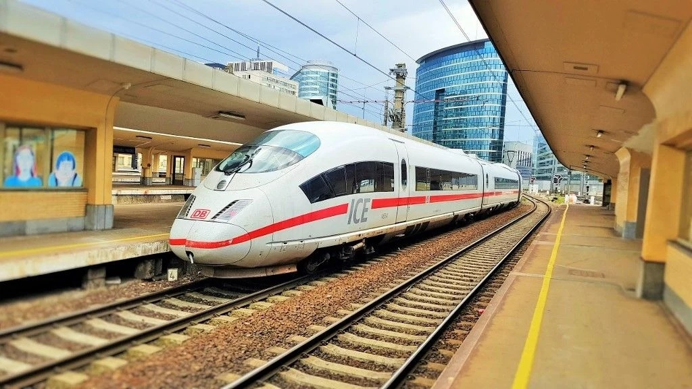
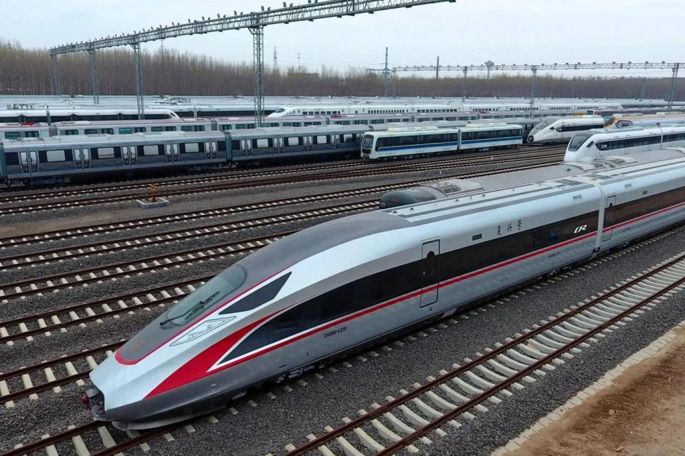
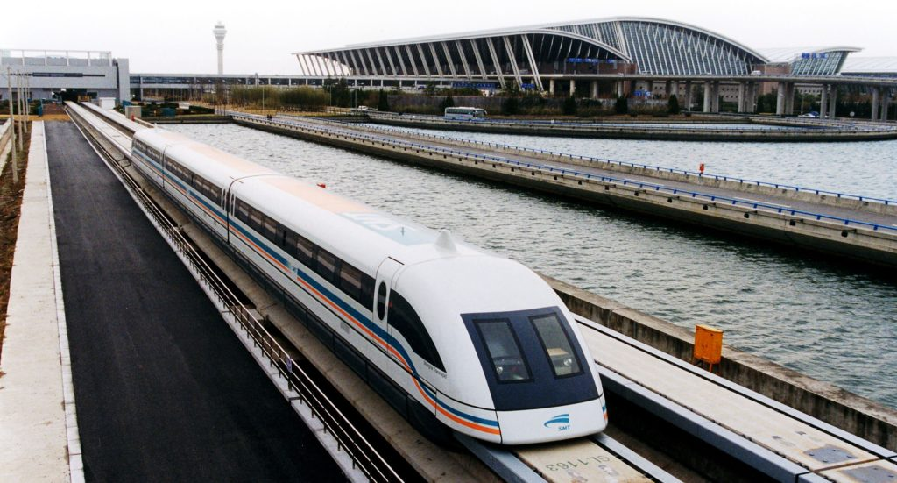

Япония представи на света концепцията за нови високоскоростни железопътни линии през 1964 г. и продължава да бъде световен лидер, разширявайки границите на скоростта, капацитета и безопасността на своите шинкансен линии. Докато повечето шинкансен в момента работят с максимум 300 км/ч, E5 Bullet Train на Japan Railways East (JR East) се движат с до 320 км/ч по Тохоку Шинкансен, който минава на север от Токио до Шин-Аомори.

Най-бързият член на групата – ICE3, достига скорост от 330 км/ч, като съществува от 1999 г. Тези елегантни машини са създадени за 180-километровата високоскоростна линия Кьолн-Франкфурт и са намалили времето за пътуване между двата града от два часа и 30 минути до само 62 минути от 2002 г. насам. Нормалната работна скорост е 300 км/ч, но ICE3 имат право да ускоряват до 330 км/ч, когато закъсняват. Максималните 368 км/ч са достигнати при тестове.

Освен че може да се похвали с най-дългата мрежа от високоскоростни линии в света, Китай вече разполага с най-бързите редовни влакове на планетата. CR400 Fuxing се движат с търговски максимум от 350 км/ч, но успешно достигат 420 км/ч при тестове. Те са разработени от предишни поколения високоскоростни влакове, базирани на технология, внесена от Европа и Япония.
